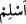

Bahru’l-ulum’da şöyle denilmektedir: Allah Teâlâ’nın “bil ve mağfiret taleb et”
kavlinde hitap Peygamberimiz (s.a.)’e dir. Zâhir olan budur. Yahut îman ehli olup
kendisinden ilim ve istiğfar hâsıl olabilecek olan herkesedir. “Allah, dönüp
dolaşacağınız yeri ve varıp duracağınız yeri bilir” kavlindeki çoğul lafzıyla olan hitap
bu mânâya işâret etmektedir.
Keşfü’l-Esrar’da şöyle denilmektedir: Ey Muhammed (s.a.), tevhîdimizle ilgili akıl
ve delillerle bildiğini yakîn olarak da bil ki Allah Teâlâ zât ve sıfatlarında birdir ve
yegânedir. Sülemî’nin “Hakàik”inde gelmiştir ki; bir âlime “
: bil” denildiğinde
bundan maksad “bildiğin şeyleri hatırla” demektir. Eğer birisi; İbrâhim Halîl (a.s.)’a “
: teslim ol” denildiğinde “
: teslim oldum” diye cevap vermişti, Mustafa Habîb
(s.a.)’e “
: bil” denildiğinde “
: bildim” dememişti” diye itiraz ederse bunun
cevabı şudur: Halîl henüz yolda idi bu yüzden “Ben Rabbime gidiyorum.” (Saffât
37/99) buyrulmuştur. Tefrika (ayrılık) vadisinde kaldığından cevabını kendisi vermesi
gerekti. Habîb-i Kibriyâ Efendimiz (s.a.) ise “kulunu götüren” (İsrâ 17/1) sırrıyla cem
(birlik) noktasında Hak tarafından alınmış idi. Bu sebeple Allah onu kendi hâline
bırakmadı, Cenâb-ı Hak kendisi “Peygamber îman etti” (Bakara 2/285) diye cevap
verdi.
Ebu’l-Hüseyin en-Nuri (k.s.) şöyle demiştir: Peygamberimiz Hz. Muhammed Mustafa
(s.a.)’in dâvet edildiği ilim harflerin ilmidir. Harflerin ilmi ise elifin lâmındadır. Elifin
lâmının ilmi eliftedir. Elifin ilmi noktadadır. Noktanın ilmi mârifet-i asliyededir.
Mârifeti asliyenin ilmi evvelin ilmindedir. Evvelin ilmi meşiettedir. Meşietin ilmi
hüviyet gaybındadır. İşte Allah’ın, Peygamberi dâvet ettiği ve “bil” buyurduğu ilim
budur. İşte “hâ” hüviyet gaybına râcidir.
Seni, senin kendini bildiğin gibi kim bilebilir?
Seni, senin kendini bildiğin gibi kimse bilmez.
İman ilmin tâ kendisidir. Allah Teâlâ’nın peygamberden “îman etti ve bildi” diye
haber vermesi, Peygamberimiz (s.a.)’in kendisinin “ben bildim” demesinden daha
tamdır. Buna göre “kendi günâhın, için (Allah’tan) mağfiret dile” yâni sen bildiğini
bildiysen işte o zaman “kendi günâhın için (Allah’tan) mağfiret dile.” Zira şanı çok
yüce olduğu için Hak Teâlâ hazretlerini başkası bilemez.
et-Te’vilâtü’n-Necmiyye’de şöyle denilmektedir: Ey Muhammed (s.a.), ilm-i yakîn
(kesin ilim) ile bil ki, hakka’l-yakîn (kesin gerçek) olan Allah’tan başka hiçbir ilah
olmadığı ilm-i yakîn ile sâbittir. İşte Allah Teâlâ ilm-i zâtî sıfatıyla kulun zâtî cehâletine
tecellî edince Allah’ın ilminin nuruyla kulun cehâletinin karanlığı yok olur. Artık kul
Allah’ın ilmiyle Allah’tan başka varlık olmadığını bilir. İşte bu nokta o kulun (âlimin)
Allah’tan başka hiçbir ilâh olmadığını zannedip yanıldığı noktadır. Bunun için âlim olan
kula (Peygamberimize), Allah’tan başka hiçbir ilah olmadığını bildiğini zannettiğinden